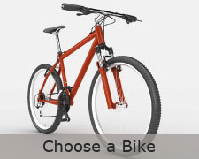
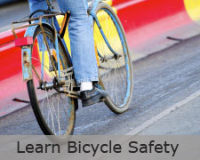
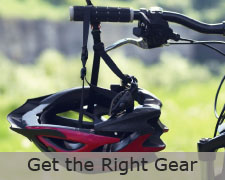

Home
Benefits
Get Started
Learn Bike Safety
Choose a Bike
Get the Gear
Success Stories
Home
>
Get Started
Get Started


Biking can be lots fun! But before you head out on the streets there are a few things you need to do:
Learn about bicycle safety
Choose the right bicycle
Get the right gear
